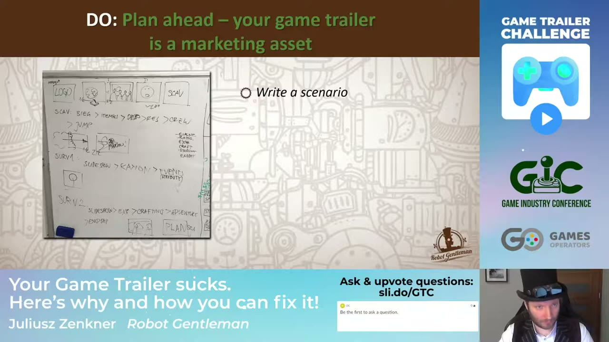
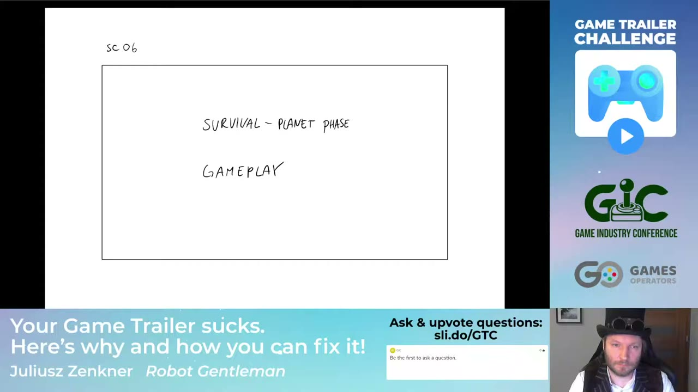
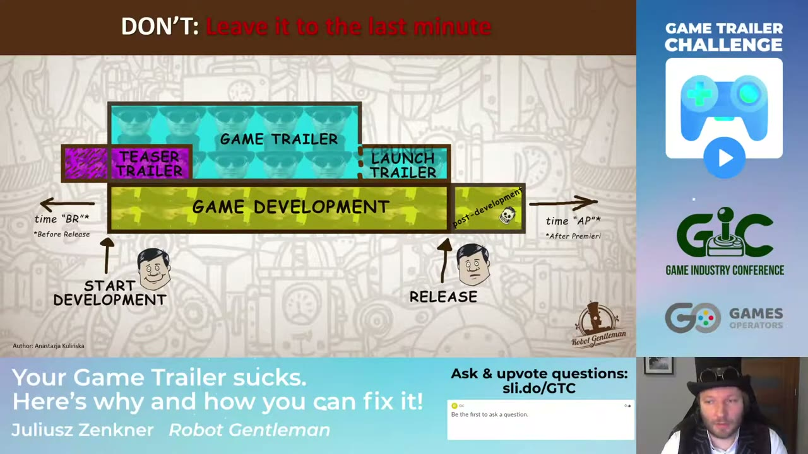
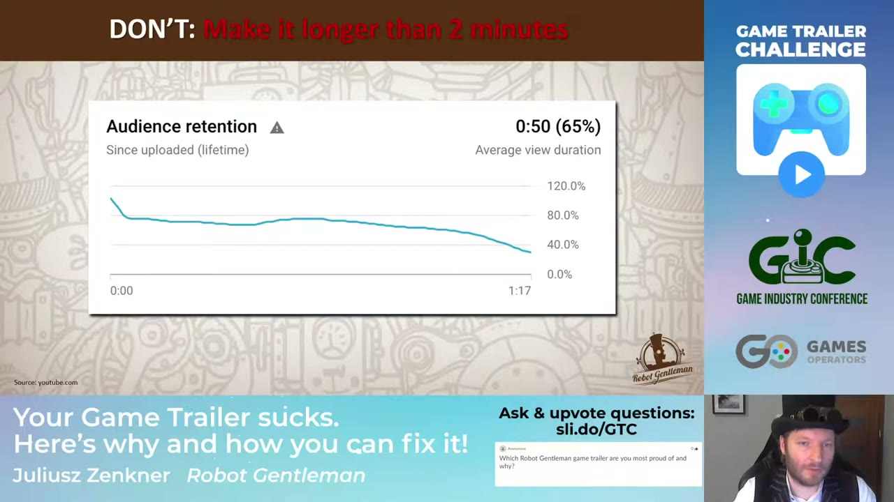
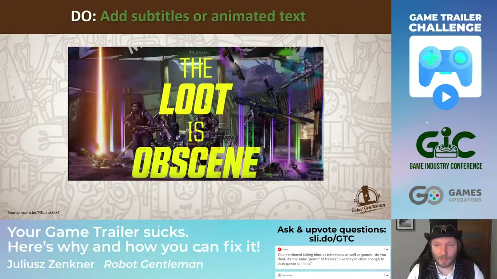

Start here
The overview
Juliusz Zenkner approaches game trailers with experience in both filmmaking and development at Robot Gentleman, the studio behind 60 Seconds! and 60 Parsecs!. His central argument is that a trailer needs its own entertaining shape while representing the game honestly. Planning, editing, music, and a clear sense of the audience matter more than simply collecting impressive shots. The talk moves from campaign roles and production methods to concrete studio examples, then answers questions about genre, learning, and platform-specific work.
The examples make this a practical production talk rather than a formula guaranteeing sales. A rough animatic exposes missing footage before expensive work begins; a retention chart illustrates how viewers leave even a short trailer; and the original and remastered 60 Seconds! trailers show how prior audience knowledge changes what needs explaining.
What the snapshots add
- Seventeen inspected snapshots document the scenario and animatic, selected finished gameplay, campaign timeline, retention figures, view-count comparison, and an animated-text example. The chart’s 65% average viewed and the later 29.8% endpoint are different measurements. The example uploads also have different dates, so their view totals do not establish causation.
What to take away
- Give each trailer a job
A teaser, general game trailer, and launch trailer serve different moments. Content and production technique are separate choices.
- Test the edit while changes are cheap
A scenario, storyboard, and rough animatic reveal missing assets, timing problems, and music requirements before final production.
- Build an entertaining sequence
A joke, twist, or miniature story can make information memorable. A feature inventory or unedited session does not automatically hold attention.
- Make the promise legible
Tone, mobile readability, genre familiarity, subtitles, and the viewer’s existing knowledge all affect what the same footage communicates.
A trailer is a production with a marketing purpose
Zenkner introduces himself through his work in film and at Robot Gentleman. That combination matters because making a trailer involves both audiovisual storytelling and understanding the game being sold. The studio’s 60 Seconds!, 60 Parsecs!, and 60 Seconds! Reatomized provide the recurring examples, including work made under practical constraints rather than the resources of a large film production.
His advice is grounded in those projects and in what he has learned by making and watching trailers. It is not presented as a requirement to possess a film career before attempting one. The useful connection is that choices about shots, performance, music, and editing serve a particular impression, and those choices can be planned rather than discovered only after capturing hours of footage.
Sell the game’s appeal through something worth watching
A trailer belongs in the marketing budget. Zenkner’s starting point is its job: help people become interested in the game and want to play it. It is possible to provide extensive information while failing at that job. Conversely, a strong impression can create interest without explaining every system, provided the impression is appropriate to the game.
He also treats trailers as entertainment in their own right. People seek them out, share them, discuss them, and enjoy watching them before deciding whether to buy. That viewing culture changes the creative task. The trailer competes for attention as a short video, not only as a container for information that an already committed customer is obliged to finish.
This does not excuse misleading footage or eliminate explanation. It means the information needs a form that holds attention: an emotional beat, an amusing situation, or a sequence with a payoff. The game’s appeal and the pleasure of watching the trailer should reinforce one another.
Separate campaign timing, content, and technique
Zenkner distinguishes several ways of naming trailers. A teaser is short and withholds much of the information in order to establish curiosity. A broader game trailer introduces the game more fully. A launch trailer supports the moment of release. These names describe campaign functions and how much the audience already knows, rather than a single mandatory editing style.
Story and gameplay trailers describe emphasis. One may foreground characters, setting, or a dramatic situation; another may foreground what the player does. Those approaches can coexist in the same video. A trailer need not choose between an intelligible premise and useful gameplay footage as though one prevents the other.
Cinematic, in-engine, and live-action labels describe production methods. A cinematic approach can involve pre-rendered work or game-engine imagery; live action introduces filmed people and physical production. These techniques are not a separate marketing objective. The important question is whether the chosen method communicates the intended experience at a cost the team can support.
The practical distinction prevents an unhelpful brief such as simply wanting an expensive cinematic trailer. Decide what the asset needs to achieve and for whom; then select the mix of footage and techniques that can achieve it.
Write the scenario and budget the work before polishing shots
Planning starts with a scenario: what will happen, in what order, and what must be made to show it. Zenkner recommends breaking the idea into concrete production requirements. Identify assets that already exist, assets that need adapting, and material that needs creating. Animation, effects, gameplay capture, voice work, and editing all take time, including contributions from other people.
A storyboard turns the sequence into shots. Its drawings can be rough; their purpose is to communicate composition and order while changes remain inexpensive. The inspected scenario slide contains sketched panels and planning notes, demonstrating that useful preproduction need not look like finished promotional art.
This is also where budget and schedule become real. A creative idea can be appealing but impossible to finish with the people and time available. Planning exposes that mismatch before the team commits to final animation, and gives collaborators a clearer request than a vague instruction to make something exciting.


Use an animatic to find timing problems early
The talk plays a rough animatic for 60 Parsecs!. An animatic places storyboard material into an edit so the team can test duration, sequence, and the relation between pictures and sound. A shot can be a drawing rather than finished animation; a missing gameplay segment can be a labeled placeholder. This makes an incomplete production watchable enough to evaluate its structure.
At 19:55, the inspected panel shows four figures at a station window facing Earth, with a camera-direction note. At 20:50, a simple card reserves space for the survival and planet-phase gameplay. Those placeholders are evidence of planning a whole sequence without waiting for every asset. They are not evidence of what the eventual movement or gameplay looked like.
Zenkner discusses music as part of this timing work. The final sequence required extending music to fit. An animatic can expose that need while there is still time to change the arrangement or the edit. Its purpose is to avoid discovering a structural problem only after the expensive shots are complete.


Carry the plan into the finished trailer and the wider campaign
The finished 60 Parsecs! example combines a retro space-age premise with the game’s timed scavenging and survival decisions. In the spoken explanation and trailer narration, the emergency pushes the crew to gather supplies and people, leave the station, and confront the uncertainty of surviving afterward. The selected finished-gameplay frame shows a colorful station scene with crew portraits and a countdown gauge. It confirms one concrete part of that presentation, not every event in the full clip.
Zenkner points out that production can flow in both directions. Material made for the trailer, such as station and shuttle sequences, was also useful in the game. A trailer need not be an isolated expense if its assets and the game’s production needs can sensibly overlap. That benefit depends on planning; it does not mean all promotional shots automatically become useful gameplay assets.
He then places trailers along a development timeline. The inspected diagram locates teasers earlier, a general game trailer across development, and a launch trailer around release. The intent is to build interest before the game is available rather than first beginning the conversation afterward. The diagram is a campaign model, not a schedule assigning a universal number of weeks to every game.


Study references for their effect, and match your own tone
References can come from films, advertisements, and other game trailers. Zenkner’s suggestion is to study how a piece produces a feeling or delivers a joke, rather than simply borrowing its surface. Timing, escalation, contrast, and the relationship between music and images can transfer between media even when the original subject does not.
His BattleBlock Theater example illustrates the danger of copying a successful voice. A funny release announcement works because the performance and delivery fit that game and its existing personality. Repeating a similar joke without those conditions may produce something derivative or awkward. A small team can use constraints creatively, but it still needs an idea suited to its resources and identity.
Tone is part of representing the game. A humorous game gives the trailer permission to be funny; that does not require squeezing every available joke into one video. Too many competing bits weaken the build and payoff. The same principle applies to other moods: the viewer should leave with a coherent sense of what spending time with this game will feel like.
Learn the audience’s language without chasing every meme
Zenkner recommends listening to the audience already gathering around the game. Comments, community discussions, Reddit, and Discord can reveal what people find funny, which characters they care about, and which parts of the premise they repeat to one another. That is useful creative evidence because it shows what is connecting rather than what the developer merely hopes will connect.
He distinguishes that understanding from inserting a currently popular meme. Production takes time, and a joke circulating today may be exhausted before the trailer is finished. A brand can look late to its own reference. The relevant question is whether a joke belongs to the game and its audience, not simply whether it has been widely shared elsewhere.
The inspected audience slide is a heading with a cartoon character, not a documented survey or a set of community messages. The recommendation comes from his explanation; the page does not treat that slide as measured proof of audience preferences.
Give the edit a shape and keep attention in mind
A short entertainment piece needs selection. Zenkner favors a focused idea, joke, twist, or narrative progression over a succession of everything the game contains. He cites an Assassin’s Creed cinematic paired with Woodkid’s music as an entertaining piece of audiovisual construction. A small production can seek its own effect through dynamic editing and music rather than reproduce that scale of animation. The aim is for each part to lead into the next rather than leave the viewer wondering why another unrelated shot has appeared.
He recommends keeping a trailer below two minutes, while his own retention example demonstrates that even much shorter footage loses viewers. The inspected YouTube chart covers approximately 77 seconds and reports an average view duration of 50 seconds, or 65% viewed on average. Its line falls to around 30% at the end. The subsequent slide explicitly displays 29.8%.
These numbers describe different things: the average share of the video watched is not the proportion still watching at its final moment. The example supports his concern about spending attention carefully; it does not identify two minutes as a scientifically established optimum for every game. A trailer’s job and audience still matter. His practical objection is to letting a video grow because the creator cannot bear to remove material.


Edited gameplay can tell a more compelling story than a recording
Showing the game does not have to mean uploading an ordinary play session. Zenkner notes frustration with cinematic showcases that leave viewers unsure how a game plays. His answer is not to abandon entertainment but to give gameplay an entertaining edit: dynamic sequences, pauses, and changes of pace can tell a story even in a shooter or platformer. Straight recordings still have uses, including submissions that explicitly request them. They serve a different purpose from the main trailer.
The comparison slide shows 770,237 views for a 60 Seconds! trailer uploaded May 15, 2015 and 97,883 for a gameplay video uploaded May 24, 2015. He uses that contrast to argue for the effort of making a trailer. The slide does not control for release timing, distribution, audience, or promotion. It establishes the displayed totals for two different uploads, not that editing alone caused the difference or that every trailer will outperform every gameplay video.
Make the footage readable where it will actually be watched
The viewing device changes what an image communicates. Zenkner asks developers to consider people watching on a phone, where a detail that is clear on an editing monitor can become hard to recognize. A trailer should make its important action understandable at the size viewers are likely to encounter it.
Stores and platforms also have different presentation conventions. He describes Steam’s emphasis on gameplay and demonstrates a Switch-oriented video that uses the context of playing on the hardware. These are observations and choices from the period of the talk, not verified current platform requirements. The idea is to plan the asset for its destination rather than assume one edit will fit every context.
The selected Switch-example frames show a logo card and then house gameplay. They do not show the live-action console handling discussed in the talk, so no visual description of that handling is inferred from them. The broader production implication remains: platform-specific presentation and footage can require additional work.
Support silent viewing and show the distinctive promise
Zenkner recommends subtitles or animated text because some people will watch without sound. He acknowledges that the studio’s own narration-heavy examples can depend on audio. The solution is to consider what meaning survives when that audio is absent, rather than assume the viewer will turn it on.
The inspected Borderlands example makes the recommendation concrete: large yellow lettering about abundant loot is superimposed on game footage. The text supplies a readable message while participating in the visual style of the trailer. That differs from adding small text that technically contains information but is difficult to read on a phone.
The message should also reveal what makes this game worth noticing. Zenkner argues for showing a distinctive feature or experience without exhausting all the surprises. A trailer needs enough specificity to create desire, but it does not have to disclose every discovery a player could make.


A first introduction and a remaster need different explanations
Zenkner revisits the original 60 Seconds! trailer, which draws on the language of retro civil-defense films. The contrast between cheerful instruction and an atomic emergency fits the game’s dark humor. He recalls making it quickly and remains proud of how much it helped the project. Its job included introducing a premise the audience did not yet know, at a stage when not all of the game was complete.
The Reatomized trailer starts from a different relationship with viewers. Many already know the family, shelter, and survival setup. Zenkner discusses showing changes and additions—such as character variations and other surprises—rather than delivering the entire original introduction again. Familiarity permits selective rule-breaking, though he still wants discoveries left for play.
At 55:10, the inspected remaster frame shows the shelter journal on Day 9, describing a ventilation problem with item choices below. That supports the presence of the familiar decision-making interface. The selected snapshots do not independently establish every new feature he mentions. The useful campaign lesson is that what must be explained depends partly on what viewers bring with them.
Questions: film grammar, information, and entertainment
Asked whether films are close enough to games to provide references, Zenkner returns to the effect of editing. His example of a fan recut presenting The Shining as a comedy illustrates how selection, music, and ordering can change a viewer’s interpretation. The transferable skill is understanding those mechanisms, rather than assuming game trailers and film trailers have identical content requirements.
He also rejects a simple choice between information and entertainment. Entertainment helps information stay with the viewer. Some audiences, particularly people evaluating a strategy game with familiar historical or mechanical foundations, may care strongly about what is new. They still benefit from an engaging presentation, but novelty and mechanical specificity can deserve more emphasis than they would in a broad introductory teaser.
Questions: learning the craft and sharing the production load
Zenkner names the first 60 Seconds! trailer as a favorite because it was enjoyable, unusually fast to make, and useful for the studio. Asked about courses, he does not endorse a specific training program. He says much of his own learning came from watching work and trying to recreate the feelings and impressions it produced. Tutorials and paid instruction exist, but he does not claim to have evaluated them all.
His own next step would be spending more time on ideas and delegating more execution, either within the studio or through outsourcing. Handling many parts himself becomes tiring when returning to the same game for repeated releases. He cites having to record new gameplay for particular console versions, including PlayStation and Xbox. That work makes the earlier scheduling advice tangible: adapting an existing trailer can still require substantial capture and production.
Questions: casual mobile play and unfamiliar genres
For casual mobile games, Zenkner suggests showing what makes a short session enjoyable. His examples include play during a few minutes on public transport, collecting things, unlocking content, and seeing more to do afterward. These are suggestions for that audience, not a claim that every mobile player wants the same progression loop. The trailer should quickly communicate the kind of fun the intended viewer is seeking.
For a game that seems to invent its own genre, he recommends using familiar elements as an entry point. Slay the Spire is his example: its combination may feel distinctive, but cards give many viewers something they already understand. Establish that recognizable foundation, then demonstrate the new mechanic or unexpected combination clearly.
Simply writing that nobody has seen a game like this is weaker than letting the viewer recognize something and then discover how it differs. He treats that as a creative challenge with several possible tools—footage, text, performance, or a reveal—rather than a fixed template. The talk closes with an invitation to share trailers and ask questions.
Source & limitations
This is an editorial synthesis of Your Game Trailer sucks. Here’s why and how you can fix it! | Juliusz Zenkner Robot Gentleman, published by Game Industry Conference. Timestamp links open YouTube at the corresponding section.
- Based on the complete English automatic-caption transcript. Names and game titles were normalized where source metadata or clear context supports them; some caption wording remains uncertain.
- Seventeen targeted snapshots were inspected across the 66-minute recording. They verify the reproduced slides and selected stills, not continuous action or the complete contents of the played trailers. The live-action handling in the Switch example was not visible in the selected frames.
- Retention and view counts are historical examples reported in the talk. The inspected endpoint slide reads 29.8%; average percentage viewed is a different 65% metric. The two view-count examples are uploads with different dates, not a controlled performance experiment.
- Platform conventions, audience preferences, and production recommendations are attributed to this talk; present-day store policies and a universal optimal trailer length were not established.
Inspected snapshots (17)
Selected stills, not continuous video review. Observations below describe the inspected frames.
9:00 ↗
- The teaser slide defines a very short video that gives little information while creating interest.
17:15 ↗
- The scenario slide combines sketched storyboard panels with planning notes for the trailer.
19:55 ↗
- A rough animatic panel labeled SC01 SH01D shows four figures at a station window facing Earth, with a camera-direction note.
20:50 ↗
- The animatic uses a plain placeholder card labeled SURVIVAL – PLANET PHASE GAMEPLAY.
22:25 ↗
- The finished trailer is displaying the Robot Gentleman logo against a space background; this instant is not a finished version of the storyboard panel.
23:00 ↗
- The finished trailer shows colorful top-down space-station gameplay with crew portraits and a countdown gauge.
25:35 ↗
- A campaign diagram places teasers earlier in development, a game trailer across development, and a launch trailer near release.
33:25 ↗
- The Know your audience slide contains a cartoon character; no audience comments or research results are visible.
38:10 ↗
- The retention chart covers about 1:17, reports average view duration 0:50 and average percentage viewed 65%, and falls to roughly 30% near the end.
38:30 ↗
- A follow-up slide displays 29.8%, supporting the speaker’s end-of-trailer retention example. It does not say 29.88%.
42:40 ↗
- The comparison shows 770,237 views for a trailer dated May 15, 2015 and 97,883 for gameplay dated May 24, 2015. The uploads have different dates.
46:00 ↗
- The Switch example is on a Robot Gentleman logo card; no actor holding the console is visible at this instant.
46:20 ↗
- The Switch example shows top-down house gameplay and an open shelter hatch; no live-action console handling is visible at this instant.
48:35 ↗
- The slide heading recommends subtitles or animated text; this instant does not yet show the example.
48:40 ↗
- The example combines Borderlands footage with large yellow text emphasizing abundant loot, under the subtitles or animated text heading.
54:25 ↗
- The remaster trailer shows a defocused, colorful suburban exterior. Specific new mechanics cannot be established from this still.
55:10 ↗
- The remaster footage shows a shelter journal open to Day 9, a ventilation problem, and item choices, with the shelter visible behind it.
Read the timestamped source captions
en-orig · automatic captions. Caption errors and non-speech labels are retained in this source view.
0:10 ↗ okay i think we can slowly start
0:13 ↗ welcoming one to game trailer challenge
0:17 ↗ uh i'm your host today uh julius lechner
0:22 ↗ and the second we'll start talk called
0:26 ↗ your game trailer sucks here's why and
0:28 ↗ how you can fix it
0:48 ↗ okay so your gamer truck your game
0:51 ↗ trader sucks and
0:52 ↗ here's how and how we can fix it
0:56 ↗ uh it's a it's a of course uh
0:59 ↗ clickbait title but we'll get into it
1:04 ↗ uh my name is is huge zachner i'm
1:07 ↗ art director in robot gentlemen a
1:10 ↗ small studio in poznan indie game dev
1:13 ↗ before uh before games i was working in
1:17 ↗ movies
1:18 ↗ uh in studio called plotting image when
1:20 ↗ i was working on
1:21 ↗ films like melancholia by lars frontier
1:26 ↗ when i was doing post-production made
1:28 ↗ painting special effects and such
1:32 ↗ other movies i was working on was
1:34 ↗ influenced by lukasz barczyk
1:38 ↗ it was also mostly post production
1:41 ↗ special effects made painting
1:43 ↗ um and the last movie
1:47 ↗ i was working on before i switched to
1:49 ↗ game dev
1:50 ↗ was uh ambition by thomas baginski
1:54 ↗ it was a short movie about how awesome
1:56 ↗ it is to land the satellite on a moving
1:58 ↗ asteroid
2:00 ↗ for european space agency
2:04 ↗ um okay and 2015
2:07 ↗ i joined my friend dominique toyo uh
2:10 ↗ in a studio called robot gentlemen
2:13 ↗ actually there were like just two of us
2:15 ↗ and we create a game called
2:18 ↗ 60 seconds which has
2:22 ↗ released and was released in 2015
2:25 ↗ may um it's our first game and
2:29 ↗ uh it was quite a hit
2:31 ↗ [Music]
2:33 ↗ it was on every youtube channels on
2:35 ↗ every twitch channel
2:38 ↗ it went quite good for us
2:39 ↗ [Music]
2:41 ↗ later on we created a
2:44 ↗ sequel called 60 parsecs
2:48 ↗ same kind of game the last one it was
2:50 ↗ kind of post-apocalyptic
2:52 ↗ wasteland survival game and this was in
2:54 ↗ space
2:56 ↗ and this was 2018 a year later
2:59 ↗ 2019 really 60 seconds re-atomized uh
3:03 ↗ upscale version of 60 seconds when we
3:07 ↗ did
3:07 ↗ 4k graphics switched to new engine and
3:11 ↗ added many features and
3:15 ↗ those are games so let's focus on the
3:19 ↗ subject
3:20 ↗ so why your game trader sucks uh what
3:23 ↗ are we going to do here
3:25 ↗ basically we're going to touch the
3:27 ↗ subject of game trailers
3:30 ↗ i'm going to show you my tips and tricks
3:32 ↗ do's and don'ts
3:34 ↗ and show you some of my trailers and
3:37 ↗ trailers that we did in robot gentlemen
3:40 ↗ and the end there'll be some time for
3:41 ↗ some questions if you have any and
3:44 ↗ hopefully some answers if i will have
3:46 ↗ any
3:48 ↗ so let's get to the point the
3:51 ↗ role of game trailers um
3:56 ↗ basically game trailer is a marketing
3:58 ↗ asset and as such it has
4:00 ↗ everything that is bad and good about
4:02 ↗ marketing assets so budget
4:04 ↗ time but also helps you reach your
4:07 ↗ viewers your potential players everyone
4:11 ↗ that you want to you know like infect
4:14 ↗ with the idea of your game
4:16 ↗ uh do that inception all that good stuff
4:19 ↗ uh that everybody's
4:20 ↗ so hyped about your game so trailer is
4:22 ↗ super important it's
4:23 ↗ also very important on storefronts on
4:26 ↗ steam
4:26 ↗ xbox playstation switch
4:29 ↗ app store google play and whatever
4:33 ↗ kfc console whatever um
4:36 ↗ trailer is important not everyone does
4:38 ↗ though those because
4:40 ↗ actually i saw many games
4:43 ↗ which were popular but they didn't have
4:45 ↗ game trader but still
4:46 ↗ uh i would also always recommend doing
4:48 ↗ them and
4:50 ↗ steam also recommends them and
4:53 ↗ the role of game trainer trailer is
4:55 ↗ super important
4:56 ↗ but then what i want to talk about also
4:59 ↗ is
5:00 ↗ something i call the setting which is
5:02 ↗ what is
5:03 ↗ uh game trailer 4 it's as i said before
5:06 ↗ you want to you know like
5:08 ↗ make the inception in the player's mind
5:10 ↗ that your game is
5:11 ↗ gonna be good and game trailer is
5:15 ↗ supposed to sell the idea to the player
5:17 ↗ uh sell the idea of your game tell them
5:20 ↗ what is
5:21 ↗ worth playing worth buying you know it's
5:24 ↗ business you want to sell the game you
5:26 ↗ want to
5:27 ↗ you want your player base to grow
5:31 ↗ and the game trader is one of those
5:33 ↗ tools that can help you
5:34 ↗ with that because you can show the idea
5:37 ↗ you can show the story
5:38 ↗ you can show the gameplay you can show
5:39 ↗ features and
5:41 ↗ in the way that games are played because
5:43 ↗ you know like screenshots
5:45 ↗ are not the same thing right you can you
5:47 ↗ can always show a screenshot and
5:49 ↗ game plays differently the video is the
5:52 ↗ most reliable source of information
5:54 ↗ about your game
5:55 ↗ i won't talk about the result and the
5:57 ↗ result usually sucks
5:59 ↗ and most of the games have really bad
6:02 ↗ game traders
6:02 ↗ like sorry not sorry but i saw many of
6:06 ↗ them
6:06 ↗ and you probably too and sometimes it
6:09 ↗ just
6:10 ↗ meh you don't want to do you want to
6:12 ↗ have
6:13 ↗ rememberable video that is
6:16 ↗ enjoyable entertaining and
6:20 ↗ [Music]
6:21 ↗ well it's an important marketing tool
6:25 ↗ so you can't you you want
6:28 ↗ you know like failure marketing right so
6:32 ↗ um game traders are a thing and they
6:35 ↗ were a thing for many years now
6:37 ↗ and in 2002 there was even a
6:41 ↗ site called gametrailers.com and on this
6:44 ↗ side there were like
6:45 ↗ you know like there were so many game
6:47 ↗ trailers and
6:47 ↗ [Music]
6:50 ↗ games were expanding as a market as an
6:52 ↗ industry
6:53 ↗ uh there were so many material that you
6:55 ↗ can actually weekly watch
6:57 ↗ [Music]
6:59 ↗ game trailer top 10
7:02 ↗ ranks or something you know like
7:03 ↗ playlists and
7:05 ↗ um it actually spawned a whole whole
7:08 ↗ culture of watching
7:10 ↗ video game trailers like i remember me
7:12 ↗ and my friend were just like
7:13 ↗ sometimes meeting up and grabbing
7:15 ↗ popcorn and watching
7:17 ↗ just game trailers after some e3 or
7:20 ↗ other
7:20 ↗ showcase you know like this year we had
7:22 ↗ so many showcases uh
7:25 ↗ besides e3 there was like i don't know
7:27 ↗ even though it was
7:29 ↗ actually the e3 was the playstation
7:31 ↗ showcase xbox shock is
7:33 ↗ nintendo there was also the game awards
7:36 ↗ showcase and every time we saw a bunch
7:38 ↗ of new game
7:39 ↗ trailers uh because
7:42 ↗ lack of the events because of the
7:43 ↗ situation in the world but
7:46 ↗ anyway people are like waiting for those
7:48 ↗ like it's a it's a cultural thing and
7:52 ↗ it's the time when you see so many games
7:53 ↗ for
7:55 ↗ new platforms for new console generation
7:58 ↗ uh for the next year what's going to
8:00 ↗ happen what's going to be released you
8:02 ↗ know
8:02 ↗ all that good stuff and you always get
8:05 ↗ hyped when you
8:06 ↗ when you watch those five minute movies
8:09 ↗ that's gonna
8:10 ↗ tease you with something new or
8:12 ↗ something all that you love you know
8:13 ↗ game trailers were and are the thing
8:17 ↗ gaintraders.com actually closed in 2016
8:20 ↗ and then and it's gonna be missed but it
8:22 ↗ spawned so many good
8:24 ↗ things like a series like angry video
8:27 ↗ game nerd which i
8:28 ↗ really love and darkly and many many
8:31 ↗ more
8:33 ↗ so what are game trailers
8:37 ↗ i kind of made my own selection and
8:41 ↗ i divided them to some by the kind
8:44 ↗ so it's it's my personal
8:47 ↗ approach uh it's not
8:49 ↗ scientific because i don't know if
8:51 ↗ there's
8:51 ↗ science beside behind the games release
8:53 ↗ right now
8:54 ↗ um but i separated them to
8:57 ↗ to groups and first group is like
9:01 ↗ big small time related first is a teaser
9:05 ↗ trailer which is
9:06 ↗ short and it's usually comes up at the
9:08 ↗ beginning of the
9:09 ↗ of the campaign marketing campaign
9:11 ↗ usually is the same time when
9:13 ↗ development starts
9:15 ↗ and the marketing campaign starts
9:18 ↗ usually sometime later if you have a
9:20 ↗ product that you want to sell so
9:22 ↗ usually teaser trailer announcement
9:24 ↗ trailer there at the beginning
9:27 ↗ of the campaign and so
9:30 ↗ many people are telling in the game devs
9:32 ↗ that hey you want to
9:34 ↗ talk about your game as soon as possible
9:36 ↗ if you have anything going on
9:38 ↗ talk about it well in bigger companies
9:42 ↗ it's sometimes different
9:43 ↗ usually you have a prepared campaign
9:46 ↗ and teaser trader announcement trader is
9:49 ↗ something that's going on on the
9:50 ↗ beginning
9:52 ↗ uh then you have game trailer which is
9:55 ↗ you know like a short video if you want
9:58 ↗ to define it
9:59 ↗ it's a short video that is defining the
10:02 ↗ game
10:05 ↗ show the features show the gameplay
10:08 ↗ tell you about the story tell you about
10:09 ↗ narrative it can be anything from
10:12 ↗ animation to live action actor
10:16 ↗ animation whatever it can be everything
10:18 ↗ that's actually the movie about your
10:20 ↗ game
10:21 ↗ and there's a new thing called launch
10:23 ↗ trailer um
10:24 ↗ it's not anything specially new it's
10:27 ↗ just something that people started doing
10:29 ↗ it because of the
10:31 ↗ popularity of of you know
10:35 ↗ media youtube and every
10:38 ↗ every internet related media
10:42 ↗ people as i said before really liking
10:44 ↗ traders and launch trailers are
10:46 ↗ those game trailers that are uh
10:50 ↗ usually released on the on the release
10:52 ↗ day or maybe a few days
10:53 ↗ before just to remind you that the game
10:56 ↗ you were hyped about
10:57 ↗ you know with all those game triggers
10:59 ↗ around you're gonna they want to remind
11:01 ↗ you that
11:02 ↗ um this game you were hyped about is
11:04 ↗ gonna be released today or tomorrow or
11:07 ↗ anywhere soon so uh
11:10 ↗ companies started doing that and if you
11:13 ↗ have
11:14 ↗ power you should do it too you know like
11:16 ↗ uh
11:17 ↗ just to remind for everyone who was
11:19 ↗ interested before that yeah
11:21 ↗ this game is gonna come out and oh
11:23 ↗ here's a new feature or
11:24 ↗ maybe oh here's a there's a new boss or
11:26 ↗ maybe some kind of secret
11:28 ↗ revealed that's uh should you know like
11:30 ↗ keep the hype up and
11:32 ↗ keep you constantly interested in in the
11:35 ↗ game that's coming up
11:37 ↗ so that's one of the approaches
11:41 ↗ the other one i decided to make is a
11:44 ↗ story
11:45 ↗ uh trailer uh which is uh well
11:48 ↗ supposed to give you the
11:51 ↗ hook up on the story uh
11:54 ↗ supposed to give you the imagination
11:59 ↗ help you imagine what the story will be
12:01 ↗ about you know like show you the
12:03 ↗ characters through the plot through the
12:04 ↗ world
12:05 ↗ everything that's gonna be in the game
12:07 ↗ too for you to explore to
12:10 ↗ experience there are many story trailers
12:13 ↗ or
12:14 ↗ story related trailers like for example
12:17 ↗ when you have
12:17 ↗ a big expansion for world of warcraft
12:20 ↗ they usually do these animations with
12:22 ↗ showcasing new characters for for the
12:24 ↗ expansion or
12:26 ↗ characters that are related to the story
12:28 ↗ of the of the expansion
12:30 ↗ um
12:33 ↗ and this is one of the this is one of
12:36 ↗ the
12:36 ↗ things that uh hype is built up on the
12:38 ↗ story on the characters you know like
12:40 ↗ recurring characters if this is a sequel
12:43 ↗ to a
12:44 ↗ other big title but also you have the
12:48 ↗ totally opposite approach which is the
12:50 ↗ gameplay trailer and it's focusing on
12:52 ↗ showing casing the feature the mechanics
12:54 ↗ you know like showing the gameplay
12:55 ↗ itself
12:56 ↗ with all the good things all the cool
12:58 ↗ things you know
12:59 ↗ sometimes those totally separate ways
13:02 ↗ you have the story trailer you have the
13:03 ↗ gameplay trailer
13:04 ↗ uh big companies usually you know like
13:07 ↗ spamming with different trailers you
13:08 ↗ know like behind the scenes
13:10 ↗ story trailer and this trailer this kind
13:13 ↗ of mechanic trailer
13:15 ↗ and the gameplay trailer is usually
13:18 ↗ required very often uh
13:22 ↗ well sometimes it's just the recording
13:23 ↗ of the gameplay but
13:25 ↗ having a gameplay trailer really helps
13:26 ↗ you steam actually
13:28 ↗ uh kind of encourages you to keep your
13:31 ↗ gameplay trader or gameplay video
13:34 ↗ at the beginning of your storefront page
13:36 ↗ you know like to have it you know like
13:38 ↗ when you open the store page and you can
13:40 ↗ see already someone's playing the game
13:42 ↗ that's
13:43 ↗ that's interesting that's fun you know
13:45 ↗ instead of screenshot
13:47 ↗ well gameplay trailers are usually um
13:50 ↗ also very required by players themselves
13:53 ↗ because you know like and it's nice
13:54 ↗ story that's a nice video there
13:56 ↗ nice animation but what's the game i
13:57 ↗ want to see the game so gameplay
13:59 ↗ trailers super important
14:02 ↗ and another one i kind of divided by
14:06 ↗ the technique that they are made of and
14:08 ↗ we have the cinematic trailer
14:09 ↗ which is usually some kind of footage of
14:12 ↗ in game cut scenes or maybe
14:14 ↗ standalone movie you know like animation
14:16 ↗ pre-rendered you have those those good
14:19 ↗ big aaa pre-rendered
14:22 ↗ cinematic trailers like for assassin's
14:24 ↗ creed or maybe
14:25 ↗ uh starcraft you know this huge
14:28 ↗ epic animations and
14:31 ↗ [Music]
14:33 ↗ sometimes the trailers are made of
14:36 ↗ cinematic in-game cinematics you know
14:37 ↗ like in-game
14:38 ↗ engine cinematics that are just
14:42 ↗ like showcasing some story or if you
14:44 ↗ have game with
14:46 ↗ 100 hours of cinematics because they are
14:48 ↗ there are games like that
14:50 ↗ um you can you know like make a college
14:52 ↗ you know like edit it to show some kind
14:54 ↗ of
14:54 ↗ uh game trailer of the story
14:58 ↗ and you can have uh live action trailers
15:00 ↗ which are
15:02 ↗ either super futuristic animation either
15:04 ↗ with actors you know like you have those
15:07 ↗ uh movie
15:10 ↗ very movie game trailer for wasteland 2
15:13 ↗ when you have people dressed up as
15:14 ↗ business rangers
15:16 ↗ uh they are like burying someone on the
15:18 ↗ desert and they are just like people
15:20 ↗ in the in the costumes that's really
15:22 ↗ cool and
15:24 ↗ back in a few years ago maybe even even
15:27 ↗ in the 90s the
15:29 ↗ people who were doing i was saying they
15:30 ↗ were like really cool
15:32 ↗ so yeah i wanted to like summarize those
15:35 ↗ kind of different kind of trailers
15:37 ↗ usually it's very the borders are really
15:40 ↗ loose so you can have like a mix of
15:42 ↗ everything
15:43 ↗ uh it's all our like game trailers right
15:46 ↗ so um i want to share my tips and tricks
15:50 ↗ my
15:50 ↗ do's and don'ts um
15:54 ↗ hopefully they will help you with you
15:57 ↗ know
15:58 ↗ making your game trader a little bit
16:00 ↗ more interesting and
16:01 ↗ helpful with your marketing campaign so
16:04 ↗ talking about marketing the first thing
16:06 ↗ the one one of the most important things
16:09 ↗ you have to plan ahead your game trailer
16:11 ↗ it's like it is a marketing asset and
16:13 ↗ with all good and
16:14 ↗ bad you know like with the budget you
16:16 ↗ have to deal with it
16:17 ↗ uh it's important to you know like not
16:20 ↗ to spend
16:22 ↗ uh your all your budget on the game
16:24 ↗ trailer but also
16:25 ↗ you need to remember about it it's
16:27 ↗ sometimes very expensive and if you're
16:29 ↗ doing yourself
16:30 ↗ your time is uh is is a
16:34 ↗ currency here that you have to spend
16:36 ↗ right so if you're working in the game
16:38 ↗ trader you don't work on your game
16:40 ↗ and if you're a bigger studio somebody
16:42 ↗ actually has to do it and you need to
16:44 ↗ you know like
16:44 ↗ think about it so there are many things
16:48 ↗ involved on
16:49 ↗ planning the game trailer and
16:52 ↗ what actually we do in the studio and i
16:55 ↗ think
16:56 ↗ that most of the studios are doing this
16:58 ↗ or similar way
17:00 ↗ is starting with a scenario or you know
17:03 ↗ like
17:04 ↗ you have a picture here uh from our
17:07 ↗ meeting that was you know like
17:08 ↗ brainstorming like what we want to do
17:10 ↗ with
17:11 ↗ the game so we we're kind of writing a
17:13 ↗ scenario and also
17:14 ↗ drawing the scenario so writing a center
17:18 ↗ and drawing a storyboard when you have a
17:19 ↗ scenario
17:21 ↗ and what you see on the whiteboard is
17:24 ↗ it is our kind of a storyboard so we
17:27 ↗ could you know like plan you know
17:28 ↗ how many assets do we need so how many
17:30 ↗ assets we can reuse from the game
17:32 ↗ already
17:33 ↗ how many new assets we have to create
17:35 ↗ how many animations
17:36 ↗ how many special effects
17:39 ↗ you know how much of a gameplay we need
17:41 ↗ to create
17:43 ↗ that kind of stuff so
17:47 ↗ uh when you have you know your plans get
17:50 ↗ out
17:51 ↗ it's really important to communicate
17:53 ↗ with your production and marketing like
17:55 ↗ i know you can be like one person studio
17:57 ↗ and you are all of those and it can be
18:00 ↗ like 10
18:00 ↗ studio or 100 it's important to you know
18:03 ↗ like
18:03 ↗ include your plans into your production
18:05 ↗ and marketing to know the deadlines
18:07 ↗ maybe there's a deadline because some
18:09 ↗ kind of important showcase is going on
18:11 ↗ you know like gamescom
18:12 ↗ or pax or e3
18:17 ↗ and yeah those deadlines would be kind
18:20 ↗ of you know
18:22 ↗ unbreachable so you need to know who
18:26 ↗ will work on the on the trailer because
18:28 ↗ as i said
18:28 ↗ if you work on the trailer to work on a
18:30 ↗ game or maybe you are working on both if
18:32 ↗ you are
18:32 ↗ actually reusing your assets but you
18:35 ↗ know like
18:36 ↗ it's uh it's an important thing to plan
18:37 ↗ it and
18:40 ↗ what we also are doing in our studio is
18:43 ↗ that we create an animatic and animatic
18:45 ↗ is you know like kind of a
18:47 ↗ movie itself with you know
18:50 ↗ pictures that are made for the
18:52 ↗ storyboard or maybe improved
18:54 ↗ that show that are showing the uh the
18:57 ↗ flow of the video the
18:58 ↗ uh first first phase of editing
19:02 ↗ um uh you can also you know like uh
19:06 ↗ find some music that is actually working
19:08 ↗ for for the video you can work on many
19:10 ↗ things with
19:11 ↗ when you create an animatic and still
19:14 ↗ you don't need to spend time
19:16 ↗ to create uh final assets and this is
19:19 ↗ actually
19:20 ↗ very helpful because you will know for
19:22 ↗ sure what can you cut out
19:24 ↗ and what can you afford and what can you
19:26 ↗ create to have a
19:28 ↗ good trailer so i want to share with you
19:31 ↗ uh
19:33 ↗ one version of our animatic for
19:36 ↗ 60 parsecs trailer
19:52 ↗ [Music]
20:04 ↗ so
20:11 ↗ [Music]
20:18 ↗ oh
20:23 ↗ [Music]
20:24 ↗ [Applause]
20:25 ↗ [Music]
20:32 ↗ so
20:40 ↗ [Music]
21:00 ↗ [Music]
21:07 ↗ [Applause]
21:08 ↗ [Music]
21:18 ↗ yeah so that's one of the versions uh
21:21 ↗ one of the first versions of the
21:22 ↗ animatic and
21:23 ↗ it was slowly you know like building up
21:25 ↗ to be a trailer
21:27 ↗ so the moments when you've seen like a
21:30 ↗ scavenge gameplay survivor gameplay uh
21:34 ↗ where you know like we were guessing
21:37 ↗ that
21:37 ↗ yeah we want to show a little bit of
21:39 ↗ gameplay here we were drawing
21:41 ↗ or writing down that you need to show
21:44 ↗ this and that and this
21:46 ↗ according to the music as you can put
21:48 ↗ here the music was cut out in the
21:50 ↗ in somewhere in the middle then we knew
21:52 ↗ that we need to extend the music you
21:54 ↗ know
21:54 ↗ uh you can learn a lot and you can plan
21:57 ↗ a lot with
21:58 ↗ animatic and it helped us many times
22:01 ↗ and to compare what is the final effect
22:05 ↗ i want to show you the the neck
22:09 ↗ i want to show you the final result of
22:11 ↗ the 606 game trade
22:27 ↗ welcome to the atomic space age
22:30 ↗ yesterday
22:31 ↗ mr and mrs average american dreamed of
22:33 ↗ reaching the stars
22:35 ↗ today they become astro citizens
22:37 ↗ tomorrow
22:38 ↗ nuclear war meanwhile in earth's orbit
22:42 ↗ astro citizen cadets witnessed the end
22:44 ↗ of civilization as we know it
22:47 ↗ but no one is safe from nuclear bombs
22:49 ↗ not even in space
22:51 ↗ astro citizens 60 seconds to evacuate
22:58 ↗ you will need supplies you will need a
23:01 ↗ crew
23:02 ↗ space is limited and time is running out
23:04 ↗ three
23:05 ↗ two one
23:12 ↗ surviving humans is in your hands
23:14 ↗ captain every day may end in a disaster
23:16 ↗ and only your decisions can prevent it
23:19 ↗ trapped together in a shuttle you will
23:20 ↗ face soup shortages and other horrors of
23:22 ↗ outer space
23:24 ↗ until you find yourself on a strange new
23:26 ↗ world
23:28 ↗ explore this alien planet and discover
23:29 ↗ its mysteries in an incredible adventure
23:31 ↗ survive dangerous encounters with aliens
23:34 ↗ robots
23:35 ↗ communists space monsters pirates
23:37 ↗ murderous ai and a pizza from unknown
23:39 ↗ dimension
23:40 ↗ but you're not alone on this journey
23:42 ↗ become a fearless later
23:44 ↗ a caring friend or a supporting tyrant
23:47 ↗ and you and your crew survive against
23:49 ↗ impossible odds in a world yet unknown
23:52 ↗ buckle your seat belt captain this is
23:56 ↗ 60 parsecs
24:06 ↗ okay so that's the final result of our
24:10 ↗ work it was actually so much work
24:12 ↗ uh thanks to the all the preparation and
24:15 ↗ planning
24:16 ↗ but uh there are still so many things we
24:19 ↗ need to create for
24:20 ↗ the for the trailer itself
24:23 ↗ and many things we created and reused in
24:26 ↗ the game like
24:27 ↗ exploding space station flying off uh
24:32 ↗ space shuttle you know space shuttle
24:34 ↗ landing on the planet was also
24:36 ↗ um reused in the game as you know like
24:39 ↗ little cat scene when you're playing
24:41 ↗ and you're crushing your ship and
24:44 ↗ yeah you know like it takes time so
24:46 ↗ what's important is that
24:50 ↗ you cannot leave it to the last minute
24:51 ↗ and i strongly
24:54 ↗ recommend to think about the trailer as
24:56 ↗ soon as possible
25:00 ↗ well as for your whole marketing
25:02 ↗ campaign actually
25:04 ↗ but you know like it takes time and you
25:06 ↗ need to think about when and how you
25:07 ↗ want to do it if you want to
25:09 ↗ go for many traders or you want to go
25:11 ↗ for one and spam it or
25:13 ↗ again if you if you're happy with it and
25:16 ↗ if you think it's actually
25:17 ↗ you know like does the job so
25:21 ↗ there's a great graph made by my friend
25:24 ↗ from
25:24 ↗ studio um you have the game development
25:28 ↗ time and
25:29 ↗ usually the teaser trailer goes
25:31 ↗ somewhere around at the beginning when
25:33 ↗ you
25:34 ↗ begin the campaign like it's usually
25:36 ↗ this way
25:37 ↗ it's rarely that you have already
25:40 ↗ finished the game and start again
25:42 ↗ playing after you finish the game
25:45 ↗ those those those things are going um
25:49 ↗ so on their separate ways uh but at the
25:52 ↗ same time
25:53 ↗ so you go over to the trailer somewhere
25:55 ↗ at the beginning everything
25:57 ↗ later is a any kind of game trailer
26:00 ↗ and you start to create your launch
26:02 ↗ trailer somewhere
26:04 ↗ someone before the release after
26:07 ↗ the release you have post development
26:09 ↗ and
26:11 ↗ not many people actually focusing on the
26:13 ↗ marketing after the release
26:16 ↗ maybe maybe if the the game is actually
26:18 ↗ not really successful
26:19 ↗ and you try to you know like lift it up
26:22 ↗ and
26:25 ↗ do something to you know like to to to
26:27 ↗ help it
26:28 ↗ be discovered um but mostly
26:32 ↗ the biggest the biggest is always the
26:35 ↗ first day of the game
26:36 ↗ the opening the release day so you want
26:39 ↗ to build up the hype
26:40 ↗ before not after or just
26:43 ↗ just just few days before right
26:47 ↗ okay so um you're working on your game
26:49 ↗ trailer
26:51 ↗ you need to remember that this is kind
26:53 ↗ of a form of a
26:55 ↗ video a movie and
26:59 ↗ you know it's not like it was discovered
27:02 ↗ with the games the whole movie industry
27:06 ↗ is like 100 years old more and
27:09 ↗ the commercials and everything it's like
27:12 ↗ going on forever
27:14 ↗ and it's really good to look into that
27:16 ↗ look what the others are doing like what
27:18 ↗ the
27:19 ↗ other industries are doing get inspired
27:22 ↗ you know watch the cool movie
27:24 ↗ you like what you see in this movie like
27:26 ↗ explore the idea of using what you like
27:29 ↗ in this movie or in this commercial
27:30 ↗ our commercials are really smart they
27:32 ↗ usually want to
27:34 ↗ um implant the product idea in your head
27:37 ↗ in 30 or less seconds and
27:41 ↗ so you know like they did the research
27:43 ↗ many many years ago and it's really cool
27:45 ↗ you don't have to look up
27:46 ↗ for the for the inspiration or for the
27:49 ↗ signs
27:50 ↗ behind commercials and movie trailers
27:53 ↗ you know
27:53 ↗ and even look up for other game trailers
27:56 ↗ that you like
27:57 ↗ see what others are doing how they are
28:01 ↗ solving uh problems you know like how
28:03 ↗ they are solving
28:04 ↗ um showing the gameplay or
28:08 ↗ merging editing you know like gameplay
28:10 ↗ with
28:11 ↗ cinematics you know like the way others
28:13 ↗ are doing it and learn
28:15 ↗ but it's very important to not jump
28:18 ↗ too too far and assume that everything
28:21 ↗ that works for them works for you
28:22 ↗ because it's not working like that yeah
28:25 ↗ you won't just see a cool game trailer
28:27 ↗ and just take copy one to one and think
28:29 ↗ it's gonna work for your game
28:31 ↗ especially if you want to have a very
28:33 ↗ funny trailer for
28:34 ↗ a very serious game or maybe with
28:37 ↗ subjects that are not
28:39 ↗ really comparable on different platforms
28:42 ↗ you know like on different um
28:46 ↗ different uh different ways to show
28:47 ↗ things right so
28:49 ↗ uh there was this great game trailer for
28:52 ↗ battle block
28:53 ↗ theater and there was this was for the
28:55 ↗ steam version so
28:57 ↗ it was i think second or another game
29:00 ↗ trailer for this game
29:01 ↗ but it was focusing on the steam release
29:04 ↗ and it was super funny
29:05 ↗ and they definitely had the resources to
29:08 ↗ do that
29:09 ↗ with the comedian that made the funny
29:12 ↗ narration
29:13 ↗ and the jokes were there but if you
29:16 ↗ would try to do something like that
29:18 ↗ today i don't think it's gonna work
29:20 ↗ or not if you actually copy
29:23 ↗ this the same way of course you want to
29:25 ↗ respect the others and
29:26 ↗ don't just steal their ideas but i'm
29:28 ↗ talking about you know like approaching
29:30 ↗ the same same way things that
29:34 ↗ working for others they might not work
29:36 ↗ for you need to be smart and
29:38 ↗ look how to how to you know
29:42 ↗ make things fun in your own way but also
29:45 ↗ learn how they get to the point when
29:47 ↗ they know that
29:48 ↗ their thing is funny uh it's kind of you
29:51 ↗ know like a
29:52 ↗ very very complicated and very
29:57 ↗ not simple way to say how to find your
30:00 ↗ own way for that
30:01 ↗ but anyway this this video is super
30:05 ↗ funny and you want to have funny you
30:07 ↗ need to look for
30:08 ↗ for your own approach for that
30:11 ↗ so analyze what others are doing uh
30:14 ↗ analyze why they are doing what they are
30:15 ↗ doing maybe they have the resource maybe
30:17 ↗ they have the connections maybe they
30:19 ↗ know
30:19 ↗ people that can help them to reach the
30:22 ↗ points
30:24 ↗ you will always notice the
30:27 ↗ [Music]
30:28 ↗ difference in quality when you are
30:30 ↗ comparing aaa studios to
30:32 ↗ indie games and you know everyone in
30:36 ↗ between
30:37 ↗ but uh what they will always say to
30:40 ↗ indie game studios that they need to be
30:42 ↗ very very smart with what they're doing
30:44 ↗ so
30:45 ↗ there's this classic movie called
30:47 ↗ warcraft and
30:48 ↗ there is a quote that they're stronger
30:50 ↗ be smarter
30:52 ↗ and this is what basically you need to
30:54 ↗ do when when you are smaller you need to
30:56 ↗ be smarter you need to be creative and
30:58 ↗ your limitations and this is very
31:00 ↗ important your limitations actually can
31:01 ↗ be your
31:02 ↗ biggest advantage of being creative
31:04 ↗ because
31:05 ↗ um you need to overcome the
31:08 ↗ [Music]
31:10 ↗ the big guys you know like you need to
31:11 ↗ show something funny
31:13 ↗ basically you want to have if you have a
31:15 ↗ smaller game it has to be
31:18 ↗ wiki and funny and playable and just
31:21 ↗ enjoyable
31:22 ↗ and same goes for the trailer you know
31:23 ↗ like uh you need to have the same kind
31:26 ↗ of energy
31:27 ↗ when you're doing the trailer when you
31:29 ↗ have the same energy when you're going
31:30 ↗ the game if you think your game is
31:32 ↗ unique you need to bring into the game
31:34 ↗ and you want your game to be
31:38 ↗ your game trailer to be as unique as
31:40 ↗ your game
31:42 ↗ so you need to be smart about it but
31:45 ↗ don't get carried away like you know you
31:47 ↗ have something good working you're
31:48 ↗ working something good you have
31:50 ↗ something good there
31:51 ↗ and you want to show it in the game
31:53 ↗ trailer um
31:55 ↗ you need to take be cautious and if you
31:58 ↗ know the game is funny and witty
32:01 ↗ uh dialogues are great you cannot just
32:04 ↗ spam
32:05 ↗ all those things in the game trailer
32:06 ↗ because you need to
32:09 ↗ let players know that this is gonna be
32:11 ↗ fun game
32:13 ↗ or this is going to be a serious game or
32:14 ↗ this game going to be shooting or
32:16 ↗ whatever but you cannot just expand
32:18 ↗ the main feature just you know make it
32:21 ↗ short and
32:23 ↗ focus on how to how to show the features
32:27 ↗ um
32:28 ↗ in a way that it's not gonna be too much
32:31 ↗ right
32:33 ↗ uh and for that it's usually best to
32:35 ↗ actually know who are you aiming for so
32:38 ↗ another tip is to know your audience if
32:40 ↗ you have an
32:41 ↗ audience it's good to actually you know
32:44 ↗ uh learn what they like what they liked
32:47 ↗ about your
32:47 ↗ previous projects or maybe what they
32:50 ↗ like about your game
32:52 ↗ you know really read the comments go
32:54 ↗ into discussions
32:55 ↗ on message boards on reddit on steam
32:58 ↗ wherever actually if you have a discord
33:00 ↗ like we actually have a discord and it's
33:03 ↗ really fun to interact with players and
33:05 ↗ you know like learn what they like
33:07 ↗ they like some silly funny things about
33:10 ↗ their games and
33:12 ↗ we try to you know like deliver the same
33:13 ↗ kind of energy
33:15 ↗ and if you don't have an audience
33:18 ↗ you probably have some kind of
33:20 ↗ perspective what kind of audience would
33:21 ↗ be interested in your game so this is
33:23 ↗ this is your
33:24 ↗ audience so you need to look for similar
33:25 ↗ titles or
33:27 ↗ similar game trailers and see what
33:29 ↗ others are doing what are they are
33:31 ↗ aiming for
33:31 ↗ is it for funny or childish funny
33:35 ↗ or adult funny you know i'm sticking to
33:37 ↗ funny but
33:38 ↗ you get the idea and talking about the
33:41 ↗ discord like this is
33:42 ↗ this is what our audience is creating
33:45 ↗ it's really
33:46 ↗ showing us that kind of humor that we
33:48 ↗ can actually learn for that
33:49 ↗ from that how how the humor
33:53 ↗ uh we created is received and
33:57 ↗ processed and we can actually you know
33:59 ↗ like if if this is what you like we can
34:01 ↗ do something more of that you know like
34:02 ↗ it's funny so
34:03 ↗ it makes us happy that you find it funny
34:07 ↗ and we can
34:07 ↗ like go with the flow and make something
34:10 ↗ more of it
34:12 ↗ and of course there's gonna be memes
34:15 ↗ somewhere but i would discourage you to
34:18 ↗ use memes because
34:19 ↗ it's a trap and why is trap
34:23 ↗ because of the time frame and usually
34:26 ↗ work on a trailer well sometimes it can
34:29 ↗ be super fast if you just
34:30 ↗ record some gameplay and you have some
34:32 ↗ cool idea to make a short game trailer
34:34 ↗ sure but usually it takes time it's time
34:37 ↗ to make a music you know like
34:39 ↗ edit and create assets animate record
34:42 ↗ gameplays
34:43 ↗ it all takes time so usually when memes
34:47 ↗ are
34:48 ↗ uh super popular you want to
34:53 ↗ include them in your game trailer when
34:56 ↗ you finish up
34:57 ↗ they might be outdated and usually
35:01 ↗ it usually is the case um just like be
35:04 ↗ honest how much up to date are you with
35:06 ↗ memes today like
35:07 ↗ probably everyone is but uh
35:11 ↗ how how can you determine that
35:14 ↗ when you will finish your game trailer
35:15 ↗ the memes will be still
35:18 ↗ actual and still funny there was this
35:21 ↗ case of
35:22 ↗ using memes by big corporation working
35:25 ↗ on
35:26 ↗ burgers and they wanted to use a meme
35:29 ↗ that was really
35:30 ↗ really outdated and it totally backfired
35:33 ↗ because
35:34 ↗ people were hating it and they weren't
35:36 ↗ loving it they were hating it and
35:39 ↗ they actually showed that and it wasn't
35:42 ↗ very good for
35:43 ↗ for the company the campaign was a flop
35:46 ↗ and it was kind of um
35:50 ↗ good example for us to how you don't use
35:53 ↗ memes in your
35:54 ↗ game trader but you want to make it
35:57 ↗ entertaining
35:58 ↗ and this is the the most tricky part
36:00 ↗ because
36:02 ↗ how to make some stuff entertaining well
36:05 ↗ i'm gonna go back to the watching what
36:07 ↗ others are doing
36:08 ↗ watching your favorite trailers movies
36:10 ↗ you know
36:11 ↗ and focusing on stuff that it's what's
36:13 ↗ funny you know like it's
36:15 ↗ easier to build around one suspense or
36:18 ↗ one plot twist or some kind of well
36:21 ↗ maybe cliffhanger
36:23 ↗ one joke uh one smaller trailer then you
36:26 ↗ know like try to make
36:28 ↗ something big with everything and um
36:32 ↗ it's uh it's really good to look for
36:35 ↗ for the best ones and it's not like uh
36:39 ↗ we don't have many examples in the
36:41 ↗ culture we have those great
36:43 ↗ assassin's creed trailers that were you
36:44 ↗ know like pre-rendered
36:46 ↗ uh animations with uh great
36:50 ↗ cloth animations hair with the good
36:52 ↗ music you know you watch them and
36:55 ↗ it is entertaining it's like video clips
36:58 ↗ uh
36:58 ↗ this one is from uh assassin's creed uh
37:01 ↗ renovations and
37:02 ↗ uh with the famous truck uh music track
37:05 ↗ by woodkid and it is entertaining and
37:08 ↗ you know
37:09 ↗ it's probably hard for every game to
37:11 ↗ make an
37:12 ↗ entertaining trailer but you can do it
37:15 ↗ in so many ways you can just try
37:17 ↗ dynamically editing your videos
37:20 ↗ add some cool music you know
37:24 ↗ you need to look for your own way to
37:25 ↗ make your game trailer entertaining
37:29 ↗ and entertainment costs time um
37:34 ↗ it's harder to you know like make a long
37:37 ↗ and entertaining game trailer and
37:40 ↗ usually
37:41 ↗ attention span of viewers is very very
37:43 ↗ small
37:44 ↗ so don't make longer than two minutes
37:47 ↗ there is not much videos that are uh
37:50 ↗ watched that are
37:51 ↗ longer than two means and uh as a proof
37:54 ↗ i can show you
37:56 ↗ our graph we have a graph uh is the
37:59 ↗ graph
37:59 ↗ um at the beginning there's like 100
38:05 ↗ viewers watching the the video and the
38:07 ↗ video is
38:08 ↗ one minute 17 seconds and
38:12 ↗ the longer the longer you
38:15 ↗ you look at the the graph that the less
38:18 ↗ viewers are actually watching the video
38:19 ↗ so at the end of the video
38:21 ↗ so people who actually stayed on youtube
38:24 ↗ and watched the video till the end
38:26 ↗ one minute 17 seconds is 29.88
38:32 ↗ almost thirty percent people are
38:33 ↗ watching one minute video till the end
38:36 ↗ and most of them just you know like
38:39 ↗ uh turn it off so
38:42 ↗ it's important to know those kind of
38:43 ↗ statistics how long
38:46 ↗ how much you know and this is the thing
38:49 ↗ like
38:50 ↗ uh it's easier to make a shorter video
38:52 ↗ that is constantly entertaining
38:55 ↗ and then you know longer one with
38:58 ↗ different pacing so this is this uh
39:02 ↗ famous quote that everybody thinks that
39:04 ↗ alfred hitchcock said
39:06 ↗ that i want a film that begins with an
39:08 ↗ earthquake and work up to a climax
39:11 ↗ well actually he wasn't the person who
39:13 ↗ said that
39:14 ↗ because it was robert montgomery but he
39:17 ↗ actually wasn't
39:18 ↗ this person it was uh someone else it
39:20 ↗ was robert hart davis
39:22 ↗ uh but also it wasn't him um he actually
39:26 ↗ was the first one to use the quote
39:27 ↗ in a review he wrote in 1938
39:31 ↗ and he was in this review he actually
39:33 ↗ was quoting some mystery man
39:34 ↗ that was one just you know like he
39:37 ↗ wanted a movie like that
39:38 ↗ and it seems that for 100 years people
39:43 ↗ are
39:44 ↗ constantly wanting high tension
39:47 ↗ high high entertainment i don't know
39:51 ↗ action in the movies and
39:54 ↗ nowadays it's even harder to keep the
39:57 ↗ viewer attention and
39:59 ↗ uh for the further longer time span
40:02 ↗ so you need to have like
40:06 ↗ you need to have the idea of how to how
40:09 ↗ to keep that
40:10 ↗ how to keep the story how to keep the
40:12 ↗ viewer attention how to keep the viewer
40:16 ↗ to watch your video and to remember the
40:19 ↗ game you're trying to
40:20 ↗ to you know like to sell there so it's
40:24 ↗ very important to stay up
40:26 ↗ uh stay up to date with the industry to
40:30 ↗ you know like to actualize your your
40:32 ↗ knowledge
40:33 ↗ to um
40:38 ↗ to understand what's going on what
40:40 ↗ viewers are
40:41 ↗ like what they don't like uh you know
40:45 ↗ uh recently i noticed that so many
40:47 ↗ players are
40:49 ↗ not really happy with the trailers they
40:51 ↗ see on those showcases
40:52 ↗ especially the trailers that don't
40:54 ↗ showcase the gameplay at all
40:56 ↗ and focusing only on those
41:02 ↗ focusing only on those cinematic things
41:05 ↗ you know
41:06 ↗ like um yeah it's nice to see these
41:09 ↗ nice animations and great plots
41:12 ↗ music yeah yeah that's great but how is
41:15 ↗ it how the game
41:16 ↗ looks like you know like what what is
41:19 ↗ the gameplay
41:20 ↗ so maybe the times are changing
41:24 ↗ and maybe it's important to include more
41:26 ↗ gameplay or think about the gameplay if
41:28 ↗ you're
41:29 ↗ if you're game trainers and
41:32 ↗ saying about talking about that they
41:35 ↗ just don't say that you don't want to
41:36 ↗ record this gameplay put it out there of
41:38 ↗ course you can do it like sometimes
41:40 ↗ some showcases competitions
41:45 ↗ for awards they require you to have that
41:47 ↗ kind of video but you don't want to show
41:49 ↗ that as your gameplay trailer even if
41:52 ↗ you just want to focus on your gameplay
41:55 ↗ it's still better to
41:59 ↗ [Music]
42:00 ↗ edit it and keep up some kind of story
42:04 ↗ um you can tell a story with your
42:07 ↗ gameplay
42:08 ↗ even if it's a shooter or platformer you
42:10 ↗ can still do a story with different
42:12 ↗ pacing sometimes dynamics
42:14 ↗ few scenes dynamics there is a pause
42:16 ↗ there's another dynamic
42:18 ↗ sequence you can do a lot with editing
42:21 ↗ and still showing the gameplay so
42:25 ↗ for example i can show you some
42:27 ↗ statistics again
42:28 ↗ and this is our viewer count for
42:31 ↗ 60 seconds game trailer uh
42:36 ↗ 770 000 and 60 seconds gameplay trailer
42:40 ↗ which is mostly recorded gameplay but
42:42 ↗ there is some editing to actually edit
42:44 ↗ out some boring stuff
42:46 ↗ uh but it's not really perfect and it's
42:48 ↗ far from
42:49 ↗ entertaining and you can see that's less
42:52 ↗ than 100 000 views so
42:54 ↗ i hadn't even looked at the viewer
42:56 ↗ attention because this
42:58 ↗ gameplay trailer is is longer it's i
43:01 ↗ think like few minutes and i don't think
43:02 ↗ anyone was watching that at the end
43:04 ↗ uh but i know now it's but i wanted to
43:07 ↗ have a
43:08 ↗ gameplay trailer for our game for
43:10 ↗ everyone to actually you know like
43:12 ↗ know what is the gameplay about because
43:14 ↗ the
43:15 ↗ gameplay we showed the game trailer was
43:17 ↗ a bit short and
43:19 ↗ you're gonna see that later so
43:22 ↗ remember about the platforms uh and i'm
43:24 ↗ talking about platforms for your
43:27 ↗ games uh store platforms and also
43:29 ↗ platforms
43:30 ↗ viewing platforms like youtube so
43:32 ↗ talking about the youtube
43:34 ↗ uh because it's one of the most popular
43:37 ↗ viewing platforms in the internet
43:39 ↗ there are many statistics on in the
43:41 ↗ internet that can help you up
43:44 ↗ with the
43:46 ↗ [Music]
43:48 ↗ with the science behind what viewers are
43:52 ↗ doing
43:53 ↗ and what kind of uh
43:56 ↗ decisions they are making and that is
43:58 ↗ everything for for you know like for
44:00 ↗ apps and ads
44:03 ↗ so basically most of the people are
44:05 ↗ watching youtube videos on their phones
44:07 ↗ and
44:08 ↗ most of them are making decisions
44:12 ↗ uh to buy a product based on what they
44:15 ↗ are watching on youtube
44:16 ↗ so this is like huge numbers and
44:20 ↗ this actually makes you think that if
44:22 ↗ you're doing a video that's gonna be
44:25 ↗ watched on a smaller device you know
44:27 ↗ like on a
44:27 ↗ like a cell phone um
44:31 ↗ you want to have you know like your
44:33 ↗ video clear
44:35 ↗ and message clear also
44:40 ↗ youtube is a platform when you know like
44:41 ↗ you have different different things like
44:44 ↗ captions
44:45 ↗ [Music]
44:47 ↗ you can promote your video as a
44:49 ↗ commercial everything that goes with
44:51 ↗ youtube
44:52 ↗ but we're also talking about the
44:53 ↗ platforms you also have the store
44:54 ↗ platforms so
44:55 ↗ there's steams uh there's uh playstation
44:59 ↗ xbox
45:00 ↗ nintendo and they all have some kind of
45:03 ↗ either requirements
45:05 ↗ are the recommendations like for example
45:07 ↗ steam has this recommendation to
45:09 ↗ keep your gameplay trailer at the
45:12 ↗ beginning of your
45:13 ↗ gallery on the storefront and there is a
45:18 ↗ there is this kind of uh recommendation
45:21 ↗ or culture with nintendo games to show
45:24 ↗ actors and game played on in the
45:27 ↗ handheld with the
45:28 ↗ hands visible so most of the games you
45:31 ↗ on the switch you actually will be
45:33 ↗ seeing the trade in the trailers
45:35 ↗ people playing the games or game
45:38 ↗ showcase
45:39 ↗ on the handheld option on the switch
45:42 ↗ nintendo switch so we did that also
45:46 ↗ many years after the release and it's a
45:48 ↗ short video that i'm gonna show you
45:50 ↗ right now
46:03 ↗ hello ted are you having fun in your
46:05 ↗ nuclear fallout shelter
46:07 ↗ no there must be something that will
46:09 ↗ cheer you up shall we play a game then
46:11 ↗ how about
46:11 ↗ 60 seconds that's more than enough time
46:14 ↗ to collect supplies essential for
46:16 ↗ survival
46:17 ↗ don't forget your family duck and cover
46:21 ↗ but this isn't over yet day by day you
46:24 ↗ and your family must survive in a
46:25 ↗ fallout shelter for as long as you can
46:27 ↗ you have to ration food and water
46:29 ↗ send expeditions into the wasteland when
46:31 ↗ supplies run low and face unexpected
46:33 ↗ situations
46:34 ↗ making decisions that will affect your
46:36 ↗ future sounds fun
46:38 ↗ because it is tell your friends
46:41 ↗ good luck ted the government is not
46:43 ↗ guaranteed that you will survive long
46:44 ↗ enough to tell your friends or get sued
46:47 ↗ look at him go
46:54 ↗ yes and we tried to include everything
46:57 ↗ that i
46:57 ↗ said like actors where we had one actor
47:00 ↗ and
47:01 ↗ um and you know like there was this
47:05 ↗ moment of playing the the game with
47:07 ↗ hands and
47:08 ↗ i think nintendo culture of game
47:11 ↗ trailers is like that
47:12 ↗ and it was really fun to do actually and
47:16 ↗ we were happy to do it
47:18 ↗ um but yeah think about the platforms
47:21 ↗ and
47:21 ↗ there's another don't make your trailer
47:25 ↗ sound dependable
47:27 ↗ this is something that we actually
47:28 ↗ you're not really doing
47:30 ↗ but i would still try to
47:33 ↗ [Music]
47:34 ↗ encourage you to think about it like uh
47:38 ↗ there's this thing on youtube when you
47:40 ↗ can have captions so if you have a
47:42 ↗ narrative on like uh narrator
47:45 ↗ um the actor like we had on the trailer
47:48 ↗ just second ago
47:50 ↗ you can you know like write your own
47:52 ↗ captions so you are you have um
47:55 ↗ you can watch the video without the
47:56 ↗ sound and still have like some
47:58 ↗ information
47:59 ↗ but videos like
48:02 ↗ game creators like heavy and sound then
48:04 ↗ can be
48:05 ↗ can lose some kind of um
48:10 ↗ quality when people are watching them
48:13 ↗ without the sound obviously
48:15 ↗ but need to think about the
48:16 ↗ accessibility all the time
48:18 ↗ and you need to think about who and how
48:20 ↗ watches the
48:21 ↗ the videos so it's a good thing to add
48:24 ↗ subtitles or animated text to your game
48:26 ↗ trailer
48:28 ↗ uh you know like just to make sure that
48:30 ↗ everybody got the
48:31 ↗ idea and or maybe some kind of features
48:35 ↗ like for example for borderlands there's
48:37 ↗ this great game trailer with a lot of
48:39 ↗ text
48:39 ↗ and we know the loot is obscene it's
48:42 ↗ hard
48:43 ↗ not to notice that loot is obscene
48:45 ↗ because the text is there and you can
48:46 ↗ watch the video without
48:48 ↗ sound at all and you will still know
48:50 ↗ that the loot
48:51 ↗ is obscene
48:54 ↗ and what's important is that
48:57 ↗ you want to show your game but you want
49:00 ↗ to show your features
49:01 ↗ but try not to show everything keep some
49:03 ↗ stuff you know secret or maybe
49:06 ↗ you don't want to you know like overdo
49:08 ↗ it in terms of production and time
49:11 ↗ management stuff uh i always
49:14 ↗ try to you know like uh encourage you to
49:18 ↗ show what's special about your game like
49:21 ↗ find the uniqueness of your game
49:23 ↗ uh if you're if you are a person who's
49:26 ↗ working on the game trailer and you're
49:27 ↗ not working on the games maybe you just
49:29 ↗ have to talk with the person who's
49:30 ↗ working on the game
49:32 ↗ and you know find the
49:35 ↗ the the unique
49:38 ↗ special thing about this game and if you
49:40 ↗ are a person who's working on the game
49:41 ↗ and on the trailer you should know
49:43 ↗ it's your game it's supposed to be
49:45 ↗ special it's supposed to be
49:47 ↗ unique and you want to tell that
49:50 ↗ in your game trailer you want to tell
49:51 ↗ that your audience and
49:53 ↗ trailer is a really nice way to put it
49:55 ↗ like
49:56 ↗ text is important screenshots are
49:58 ↗ important but game trailer is like
49:59 ↗ everything in one place
50:00 ↗ and you can hook up the player with a
50:04 ↗ game trader
50:04 ↗ very very well so
50:08 ↗ yeah that's my do's and don'ts for game
50:10 ↗ trailers
50:11 ↗ and i want to show you our first game
50:13 ↗ trailer that we did for 60 seconds
50:15 ↗ but actually i think sold the idea
50:18 ↗ of the game and hook up some players and
50:21 ↗ build up the hype even if it was like
50:23 ↗ released few months before the release
50:26 ↗ of the game
50:27 ↗ it still helped us to reach a lot of
50:30 ↗ players
50:31 ↗ and help us grow to the company we are
50:34 ↗ right now
50:36 ↗ so let's watch
50:45 ↗ meet ted a hard-working citizen and a
50:48 ↗ family man
50:49 ↗ hello ted wait a minute what's that
50:52 ↗ sound
50:53 ↗ oh no it's the nuclear bomb alarm
50:56 ↗ not to worry the government's superb
50:58 ↗ early warning system gives ted enough
51:00 ↗ time to take cover
51:02 ↗ don't just stand there ted you've got 60
51:04 ↗ seconds
51:06 ↗ that's more than ted needs to collect
51:08 ↗ supplies essential for survival
51:10 ↗ aren't you forgetting something ted
51:13 ↗ remember to take your family with you
51:15 ↗ that's it take cover but this isn't over
51:19 ↗ yet
51:20 ↗ day by day ted and his family must
51:22 ↗ survive in the fallout shelter for as
51:23 ↗ long as they can
51:25 ↗ they have to ration food and water send
51:27 ↗ expeditions to the wasteland when
51:29 ↗ supplies run low
51:30 ↗ and cope with unexpected situations
51:32 ↗ making decisions that will affect their
51:34 ↗ future
51:35 ↗ that's right ted you show those mutant
51:38 ↗ cockroaches
51:39 ↗ ted can now safely enjoy those charming
51:41 ↗ sunsets over the radioactive wasteland
51:43 ↗ with his loved ones
51:44 ↗ good luck ted the government does not
51:46 ↗ take responsibility for hardship
51:47 ↗ difficult and irreversible decisions and
51:48 ↗ can soup diet that will follow
51:56 ↗ i saw a question i think there was a
52:02 ↗ question
52:05 ↗ about which trader was proud and why i
52:07 ↗ think this is
52:08 ↗ one of the most important traders for me
52:12 ↗ and this is what i wanted to show you is
52:15 ↗ there's a whole lot a lot of references
52:18 ↗ in this
52:19 ↗ short video it's not a perfect trader
52:21 ↗ it's not the greatest piece of art
52:24 ↗ and i learned a lot till
52:27 ↗ till then it was like five years ago and
52:31 ↗ i'm think i think i would do better this
52:33 ↗ time
52:34 ↗ this year if i need to create a trailer
52:36 ↗ for this game
52:38 ↗ but i'm still very proud of it it
52:39 ↗ actually solved the idea it was fun it
52:42 ↗ was you know like
52:43 ↗ based on so many things uh like
52:46 ↗ animation about
52:47 ↗ how to avoid nuclear launch uh like
52:50 ↗ nuclear bomb
52:50 ↗ uh in the 1950s there was this animation
52:53 ↗ called duck and cover and it was you
52:54 ↗ know like
52:55 ↗ about the turtle that was supposed to
52:57 ↗ like survive this really green
53:00 ↗ vision of you know atomic blast and
53:04 ↗ yeah it was it was fun to do
53:09 ↗ we actually reused so many things from
53:10 ↗ this
53:12 ↗ trailer later in the game because the
53:14 ↗ game wasn't finished yet
53:15 ↗ and we decided like hey it looks cool
53:18 ↗ like put it in the game and
53:19 ↗ there you go like it's uh if you can do
53:21 ↗ some stuff
53:22 ↗ for the trailer for the game it's a
53:24 ↗ win-win situation so
53:26 ↗ so yeah and the next trailer uh i will
53:28 ↗ show you is uh
53:31 ↗ um is the for the re-atomized version so
53:34 ↗ four years later same kind of you know
53:37 ↗ challenges and uh people already knew
53:40 ↗ the game we know
53:42 ↗ we knew that many people who know the
53:44 ↗ game we know that
53:46 ↗ there's a person who's turning into
53:47 ↗ mutant and we have some new features
53:50 ↗ that we wanted to show
53:51 ↗ like growing hair and progress of the of
53:55 ↗ the characters so again we created
53:59 ↗ something new for the same kind of uh
54:02 ↗ environment for the better version of
54:05 ↗ the of the
54:06 ↗ kind of same game so let's see that
54:21 ↗ meet ted dolores mary jane
54:24 ↗ and little timmy a true american nuclear
54:27 ↗ family
54:27 ↗ how do you do fellow family
54:31 ↗ what was that ted i can't hear you over
54:33 ↗ the sound of the nuclear bomb a lot
54:35 ↗ the nuclear bomb alarm there there
54:38 ↗ remain calm there is plenty of time to
54:40 ↗ take cover you've got 60 seconds
54:46 ↗ make it count soup water supplies
54:49 ↗ and everything nice oh i almost forgot
54:52 ↗ make room for the family
54:53 ↗ three two one duck and cover
54:58 ↗ welcome to your fallout shelter make
55:00 ↗ yourselves comfortable
55:01 ↗ you will be staying here for a while
55:04 ↗ it's time to
55:05 ↗ ration food and water send expedition to
55:08 ↗ the nuclear wasteland
55:09 ↗ cope with unexpected situations making
55:11 ↗ decisions that will affect your future
55:14 ↗ then maybe survive or not
55:18 ↗ well hello there ted dolores mary jane
55:22 ↗ and little timmy a true post nuclear
55:24 ↗ family it might just be the fallout
55:26 ↗ but you folks are positively glowing
55:29 ↗ enjoy living the radioactive american
55:31 ↗ dream
55:32 ↗ the government does not guarantee an
55:33 ↗ enjoyable radioactive american dream but
55:35 ↗ it can deliver on amazingly improved
55:36 ↗ views sounds and hats
55:42 ↗ okay and that was 60 seconds to atomize
55:46 ↗ game trader
55:47 ↗ like we broke some rules that i was
55:49 ↗ talking about earlier like showing
55:50 ↗ everything because
55:51 ↗ this time we showed a cat a dog a mutant
55:54 ↗ everything but this is kind of different
55:55 ↗ thing because people already knew the
55:57 ↗ game
55:57 ↗ or we wanted to hook up
56:01 ↗ new players that there's a lot of going
56:02 ↗ on and there are still some secrets that
56:05 ↗ we didn't show on this trailer so
56:07 ↗ um i think every case is kind of
56:10 ↗ different and
56:11 ↗ we approach it this way if it's the best
56:14 ↗ way
56:14 ↗ it was when we were doing it so i guess
56:17 ↗ it was
56:18 ↗ okay so that's all from me uh
56:22 ↗ and we have still some time for
56:24 ↗ questions so i already see some
56:26 ↗ questions
56:27 ↗ question by arnold
56:30 ↗ so arnold person uh
56:34 ↗ you mentioned talking taking films as
56:37 ↗ references as well as games um
56:40 ↗ do you think it's the same genre of
56:42 ↗ trailers
56:43 ↗ like they're close enough to base games
56:45 ↗ and films
56:46 ↗ yeah i think so but depends on the film
56:49 ↗ and depends on the game because you have
56:50 ↗ so many
56:51 ↗ movie kind of games and so many
56:55 ↗ tedious movies that you can still do a
56:57 ↗ very uh
57:00 ↗ cool looking trailer like people are
57:02 ↗ toying around in internet with different
57:04 ↗ trailers for example
57:06 ↗ uh there is this uh funny
57:09 ↗ uh trailer of shining
57:12 ↗ fan made uh making it look like a comedy
57:16 ↗ uh or family family movie you know like
57:19 ↗ it's a
57:19 ↗ it's a it's a crazy thriller
57:23 ↗ horror even movie but still you can you
57:27 ↗ can
57:27 ↗ take some pictures and make it look like
57:30 ↗ a fun story about family in the hotel
57:33 ↗ and and yeah yeah i think you can
57:37 ↗ do a lot with the same tools you have
57:40 ↗ for movie industry in the game industry
57:42 ↗ especially with the traders
57:46 ↗ next question would you say that the
57:48 ↗ trailer needs to be informative about
57:50 ↗ the game itself or
57:51 ↗ is it entertainment most important
57:55 ↗ now load up the pads
58:00 ↗ i think it should be informative like
58:03 ↗ in a way
58:07 ↗ um but you need to inform there's gonna
58:11 ↗ be a game like that
58:12 ↗ and it's gonna be super cool like this
58:14 ↗ kind of information
58:17 ↗ but you don't need to if like put all
58:20 ↗ the informations
58:22 ↗ uh out there like when how and
58:26 ↗ what way because it's like with a
58:30 ↗ washing powder commercials or any kind
58:33 ↗ of detergent you know
58:34 ↗ when you're gonna when you want to buy
58:37 ↗ it then you know it's there you know
58:39 ↗ that kind of information when you're
58:41 ↗ like i would like to play something you
58:43 ↗ know like some kind of exploration
58:44 ↗ oh i saw this awesome trailer of this
58:46 ↗ game that was you know like
58:48 ↗ having this and that and then you
58:50 ↗ remember this kind of information this
58:52 ↗ is gonna be the game
58:53 ↗ this game gonna be cool because of that
58:56 ↗ so so yeah i would say you can acquire
58:59 ↗ that
59:00 ↗ by having the trailer entertaining
59:03 ↗ so entertainment is super important tool
59:06 ↗ to make the information
59:07 ↗ sync into the viewer so so yeah
59:11 ↗ well there are also especially specific
59:13 ↗ genres of the games like there is
59:16 ↗ this public of people playing for
59:18 ↗ example strategy games right
59:20 ↗ so those people will be very um
59:24 ↗ very interested information in the game
59:26 ↗ trailer for example if there's another
59:28 ↗ historical turn-based european
59:32 ↗ kingdom kind of game they want to know
59:35 ↗ what's new in it and
59:36 ↗ their information is much more crucial
59:38 ↗ than entertaining
59:40 ↗ but they also would like to have an
59:42 ↗ entertaining kind of
59:44 ↗ trailer to you know like uh bring new
59:46 ↗ players to the
59:47 ↗ uh to the to the bunch you know so
59:52 ↗ yeah i think that's that's that's it uh
59:55 ↗ which robot gentleman game trailer are
59:56 ↗ you most proud of and why i
59:58 ↗ actually answered that before uh
1:00:01 ↗ my first one for the 60 seconds it was
1:00:04 ↗ fun
1:00:05 ↗ to do and it was super quick
1:00:08 ↗ like i never worked that fast before
1:00:11 ↗ and it helped us a lot and this is
1:00:16 ↗ this is important for me how to approach
1:00:19 ↗ uh learning new skills of using video
1:00:22 ↗ ethnic tools
1:00:23 ↗ are there some good courses to learn and
1:00:25 ↗ skills from scratch with goal of
1:00:27 ↗ creating trailers
1:00:31 ↗ uh pro they are but are they good
1:00:35 ↗ i would need to you know like finish all
1:00:36 ↗ of them to tell you but
1:00:38 ↗ um there are many many many tutorials on
1:00:42 ↗ on youtube itself are the good quality
1:00:46 ↗ i don't know it's like the way i learned
1:00:49 ↗ was
1:00:49 ↗ watching and trying to recreate the
1:00:52 ↗ feelings
1:00:53 ↗ and feelings are super important trying
1:00:55 ↗ to recreate
1:00:56 ↗ the impressions uh but you have
1:01:00 ↗ if you have money and you want to you
1:01:01 ↗ know like learn
1:01:03 ↗ there are a lot of video editors
1:01:06 ↗ and creators on many sites that for the
1:01:09 ↗ right price
1:01:10 ↗ they can actually take you on a course
1:01:12 ↗ and teach you stuff
1:01:15 ↗ where do you see yourself in a couple of
1:01:16 ↗ years in terms of trailer and movie
1:01:18 ↗ making
1:01:19 ↗ um i'm not sure if i want to do
1:01:23 ↗ a lot of groundwork and i think i would
1:01:27 ↗ like to do more in terms of
1:01:30 ↗ creating the idea and maybe give it to
1:01:33 ↗ someone else in the studio or maybe
1:01:35 ↗ outsource it to create that because i do
1:01:38 ↗ a lot of things myself
1:01:40 ↗ and sometimes it's a it's a pain
1:01:43 ↗ to get back to the same game and
1:01:45 ↗ recreate some stuff
1:01:47 ↗ like for example this year i was working
1:01:50 ↗ on
1:01:50 ↗ trailers for our console releases for
1:01:54 ↗ 60 seconds re-atomized and 60 parsecs
1:01:57 ↗ and i had to record new gameplays for
1:02:00 ↗ specific platforms so for example i had
1:02:02 ↗ to record gameplay for
1:02:03 ↗ playstation for playstation release and
1:02:06 ↗ xbox
1:02:18 ↗ gamepl
1:02:20 ↗ better part of the creation but you know
1:02:21 ↗ that that's that's just some personal
1:02:23 ↗ stuff i guess
1:02:25 ↗ hopefully and this is what we're aiming
1:02:28 ↗ for in robot gentlemen
1:02:29 ↗ we're gonna do more entertaining uh
1:02:32 ↗ videos
1:02:32 ↗ uh for our games more more
1:02:35 ↗ more cartoonish and more fun to watch
1:02:39 ↗ hopefully for for our viewers that's
1:02:41 ↗ that's the plan
1:02:43 ↗ any specific tips for casual type of
1:02:46 ↗ mobile games
1:02:47 ↗ what viewers that are not heavy gamers
1:02:50 ↗ expect to see
1:02:51 ↗ probably gameplay i would say they are
1:02:53 ↗ they want to see
1:02:54 ↗ how would they spend their 5 minutes
1:02:57 ↗ or 10 minutes in public transport so
1:03:01 ↗ i would just try to maybe those kind of
1:03:05 ↗ gamers would like to be
1:03:08 ↗ overloaded with information that you can
1:03:10 ↗ you know like
1:03:12 ↗ have some good fun but also you know
1:03:14 ↗ they love unlocked
1:03:15 ↗ stuff you know they love their
1:03:17 ↗ currencies
1:03:19 ↗ build their gardens or whatever and
1:03:22 ↗ i think you need to show that this game
1:03:24 ↗ is gonna have
1:03:26 ↗ this huge amount of fun in a very short
1:03:30 ↗ amount of time
1:03:31 ↗ so um i would focus on that
1:03:35 ↗ actually to show that it's gonna be fun
1:03:37 ↗ and there's gonna be a lot more and
1:03:38 ↗ even more and there's be collectibles
1:03:40 ↗ and unlockables and you know just
1:03:44 ↗ this this kind of audience uh
1:03:47 ↗ might be different than you know like
1:03:50 ↗ other audiences you just don't know that
1:03:53 ↗ what if you have a game with a unique
1:03:55 ↗ general like
1:03:56 ↗ slate spire how do you prepare a trailer
1:03:59 ↗ for that kind of game
1:04:00 ↗ well you can also you can always watch
1:04:04 ↗ how
1:04:05 ↗ how they did their trailer and think if
1:04:08 ↗ they actually made it
1:04:10 ↗ uh i would actually would like to do it
1:04:13 ↗ but
1:04:13 ↗ later and that's an interesting question
1:04:18 ↗ i think that what i said about
1:04:21 ↗ uniqueness about the
1:04:23 ↗ of your game is the most important so if
1:04:25 ↗ you have a new unique genre
1:04:27 ↗ and um slate aspire is a very unique
1:04:31 ↗ game
1:04:33 ↗ but also it's a card game so there are
1:04:35 ↗ many
1:04:36 ↗ many things that are around for years
1:04:38 ↗ like cards
1:04:39 ↗ yeah like i love card games and
1:04:43 ↗ snakespire has so many things they
1:04:45 ↗ already know
1:04:46 ↗ and they know that so
1:04:50 ↗ you can play on that card you can play
1:04:53 ↗ on that card and actually
1:04:55 ↗ show that this is a card game you like
1:04:56 ↗ currency card game this is a card game
1:04:58 ↗ for you
1:04:59 ↗ but it has some specific new mechanics
1:05:02 ↗ and you want to show them in a way that
1:05:05 ↗ everybody would understand
1:05:06 ↗ so
1:05:10 ↗ if you have a game that is nobody seen
1:05:12 ↗ before
1:05:13 ↗ you need to tell that but maybe not with
1:05:16 ↗ a text
1:05:17 ↗ like it's a game that nobody seen before
1:05:19 ↗ it's maybe
1:05:21 ↗ it's maybe not a good idea um
1:05:24 ↗ what do you want to tell them either of
1:05:26 ↗ maybe some text either maybe with some
1:05:28 ↗ voice actor or maybe showing something
1:05:31 ↗ similar at the first glance
1:05:35 ↗ and then it's whoa it's totally
1:05:37 ↗ different than i'd expected i thought
1:05:38 ↗ it's gonna be you know like a
1:05:40 ↗ dungeon crawler or platformer but it's
1:05:42 ↗ not it's uh
1:05:44 ↗ i don't know what what is it because
1:05:46 ↗ it's unique right so
1:05:47 ↗ you want to you want to show that and
1:05:50 ↗ it's a bit of a
1:05:52 ↗ very creative question and as such
1:05:56 ↗ it's fun to actually explore and you
1:05:58 ↗ know like to look around to
1:06:00 ↗ to see dancer so if you have a game like
1:06:03 ↗ that
1:06:04 ↗ then congratulations it's a it's a fun
1:06:06 ↗ challenge
1:06:07 ↗ to to show it to the world
1:06:11 ↗ okay i don't see any other questions
1:06:14 ↗ so i want to thank you all for
1:06:17 ↗ watching and hopefully it was helpful
1:06:21 ↗ for you
1:06:22 ↗ and wish you all luck with the game
1:06:24 ↗ trailer challenge so
1:06:26 ↗ thank you so much uh
1:06:29 ↗ this is me you can contact me and if you
1:06:32 ↗ want to show me your trailer and ask for
1:06:37 ↗ some tips and some questions like i'm
1:06:40 ↗ always happy to
1:06:41 ↗ answer maybe not really fast but still
1:06:44 ↗ like try to answer all the questions
1:06:47 ↗ and yeah that's all thank you so much
1:06:50 ↗ bye bye